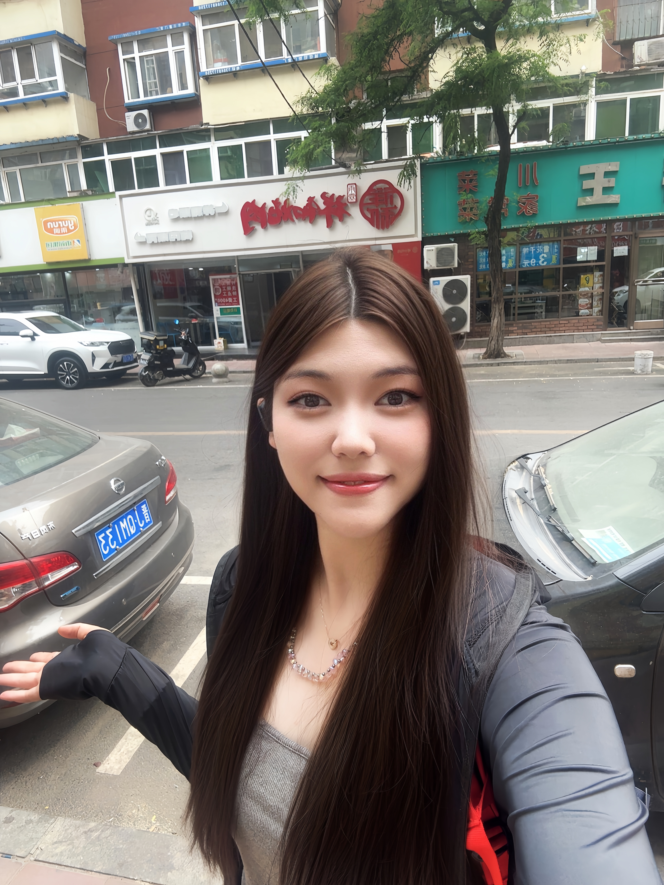

关于我
大家好，我是周芮伊，来自计科2401班，是本次交互故事站点项目组的成员之一。我对网页设计和交互故事创作有着浓厚的兴趣，也爱阅读各类短篇故事，这让我对本次项目充满期待。
在项目中，我主要负责UI设计与美化（主要包括人物立绘/像素画/场景/界面的设计绘画等），以及界面部分的程序编写，希望能通过这次实践提升自己的技能。
我相信团队协作的力量，期待和组员们一起完善这个交互故事站点，让它既美观又富有吸引力。如果大家对我的部分有任何建议，欢迎随时交流！